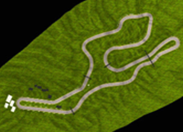

LATEST PROJECTS
DOOM 7
STS has never been shy of seeking new terrains of investigation. More and more STS s cholars are starting to explore and intervene in the arts. This object of study brings new challenges and opportunities that we want to explore in this session. We would like to gather first of all simply new kinds of knowledge arising from STS study of the arts.
CONTINUE READING>INSURGENCY SANDSTORM

STS has never been shy of seeking new terrains of investigation. More and more STS s cholars are starting to explore and intervene in the arts. This object of study brings new challenges and opportunities that we want to explore in this session. We would like to gather first of all simply new kinds of knowledge arising from STS study of the arts.
CONTINUE READING>GROUND BRANCH
STS has never been shy of seeking new terrains of investigation. More and more STS s cholars are starting to explore and intervene in the arts. This object of study brings new challenges and opportunities that we want to explore in this session. We would like to gather first of all simply new kinds of knowledge arising from STS study of the arts.
CONTINUE READING>